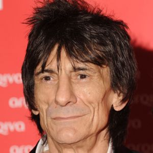

First formed in 1962, known as one of the most critically acclaimed rock bands of all time, the Rolling Stones was formed in London. The band was named after a Muddy Waters song "Rollin' Stone".
The band at first consisted of frontman Mick Jagger, guitarists Keith Richards and Brian Jones, bassist Bill Wyman, drummer Charlie Watts and pianist Ian Stewart. Guitarist Ron Wood joined Jagger, Richards and Watts in 1975.
The Stones have rocked all around for more than 50 years, selling more than 240 million albums worldwide. Earning themselves the title of the "World's Greatest Rock and Roll Band." They were placed as the
Sir Michael Philip Jagger born 26th July 1943, is one of the founding memebrs of The Rolling Stones.
As the lead singer of the Rolling Stones, Mick Jagger has become a rock legend for his gritty, blues-influenced songs and charismatic stage presence.
Jagger plays the roll of the bands amin singer and song writer.

Ron Wood was born on June 1st, 1947 in Hillingdon, London.
Wood is one the founding memebrs of the rolling stones. Woods also acts as one of the band's main guitarist, one of the main songwriters and aswell as the bands main bassit. Woods has also boosted his fame by releasing nearly a dozen solo albums and co-writing many other songs.
Bill Wyman was born William George Perks Jr. on October 24, 1936, in London, England, in the neighborhood of Lewisham. Being one of the founding memebrs of the band he was there from the start till his eventual departure from the band in the 90's to launch a solo career. He was one of the bands singer and bassist.
Charles Robert Watts was born on June 2nd, 1941, in London, England. Watts joined the Stones in 1963 after having originally turned down the offer the year before. Watts acts primarly as the bands drummer but also acts as one of the bands song writers.
Ian Andrew Robert Stewart on July 18, 1938, in Pittenweem, Fife, Scotland. Stewart was one of the founding members of the Stones acting as the bands pianist. Then left that position to act as the bands road manager thereafter, and to play at their performances and on records. Stewart sadly passed away on 12th December, 1985 due to heart failure.
Keith Richards was born 18th December, 1943 in Dartford, Kent, United Kingdom. Richards is one the bands founders helping to create the band we know today. Keith still acts as the bands guitarist and one the bands songwriters. Richards also released a few of his own solo albums over the years.